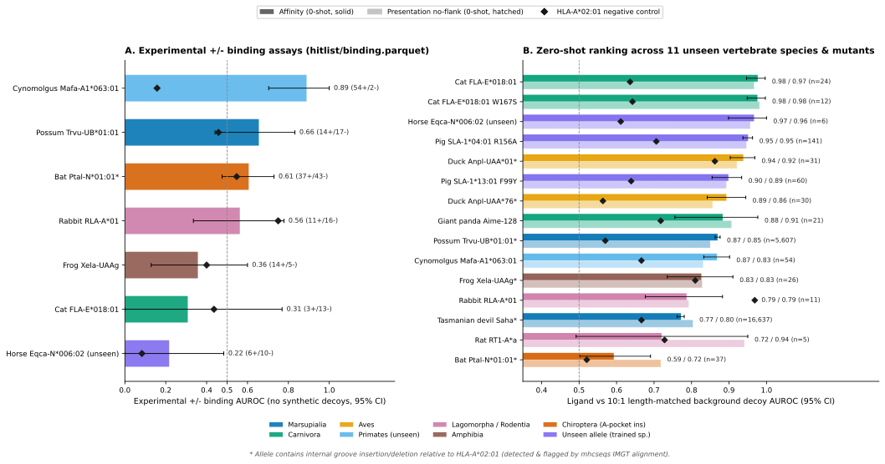
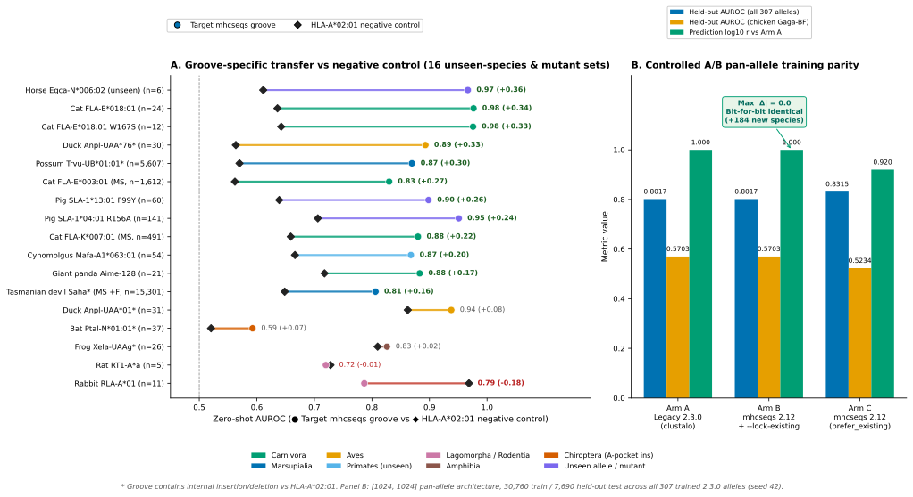

Experiment 2026-11-25: Cross-species hitlist validation & mhcseqs training parity
Date: 2026-11-25
Software: mhcflurry 2.5.x, frozen 2.3.0 weights (models_class1_presentation), mhcseqs 2.12.x, mhcgnomes 3.77–3.81
Goal: Quantify (1) vertebrate species expansion from mhcseqs, (2) zero-shot Class I Affinity and Presentation (with real species proteome flanks) accuracy on previously unseen species in hitlist and IEDB, and (3) controlled A/B pan-allele training parity before migrating downloads-generation/allele_sequences/GENERATE.sh to mhcseqs.
1. Taxonomic expansion & hitlist validation data landscape
Complete Class I binding-groove coverage expands from 47 species (only 10 species / 308 alleles trained in 2.3.0) to 227 species in mhcseqs 2.12 (231 union, 26,549 complete grooves, +184 net new vertebrate species across 14 clades): bony fish 2→53 (+51), birds 1→42 (+41), other mammals 0→28 (+28), reptiles 0→17 (+17), amphibians 0→17 (+17), rodents 2→15 (+13), marsupials 0→7 (+7), sharks & rays 0→4 (+4), bats 0→4 (+4), and cetaceans 0→2 (+2).

Left: distinct vertebrate species with complete Class I grooves in MHCflurry 2.3.0 versus MHCflurry 2.5.x + mhcseqs 2.12. Right: hitlist Class I validation data availability across 10 unseen vertebrate species, 2 unseen allele/mutant cohorts in trained species, and 2 trained MS reference controls.
2. Zero-shot Presentation (+ real proteome flanks) vs Affinity on hitlist MS elutions
For cellular MS immunopeptidomics datasets with mapped host proteomes (sarcophilus_harrisii.fasta, canis_lupus.fasta, macaca_mulatta.fasta), we paired true eluted ligands against 10:1 length-matched decoys with real N- and C-terminal flanking sequences sampled from the same species proteome and scored frozen 2.3.0 weights with zero retraining:

Zero-shot Presentation (+ real species proteome flanks) versus Affinity on hitlist MS elutions (10:1 same-proteome length-matched decoys, 95% stratified bootstrap CI).
Dataset ( |
Status |
Mapped Pos (Eval / Total) |
Affinity AUROC |
Processing (+F) AUROC |
Pres (noF) AUROC |
Pres (+ real flanks) |
Δ (Pres+F − Aff) |
PPV@N (Aff → Pres+F) |
|---|---|---|---|---|---|---|---|---|
Tasmanian devil |
0-shot Marsupialia |
2,500 / 15,301 |
0.749 |
0.750 |
0.791 |
0.806 |
+0.057 |
0.273 → 0.356 (+30%) |
Dog |
Trained ref |
1,301 / 1,301 |
0.933 |
0.837 |
0.942 |
0.947 |
+0.014 |
0.711 → 0.746 |
Dog |
Trained ref |
355 / 355 |
0.959 |
0.875 |
0.966 |
0.970 |
+0.011 |
0.752 → 0.780 |
Rhesus |
Trained ref |
874 / 874 |
0.968 |
0.866 |
0.976 |
0.979 |
+0.011 |
0.852 → 0.874 |
Even across ~160 Myr of divergence to marsupials, MHCflurry’s human-trained processing model alone achieves 0.750 AUROC on Tasmanian devil peptides with real S. harrisii flanks and lifts combined Presentation by +0.057 AUROC (+30% relative PPV@N).
3. Experimental +/- binding & broad zero-shot ranking across 16 unseen-species & mutant sets
Non-MS datasets in hitlist (in-vitro refolding, purified-MHC fluorescence screens, and synthetic viral/mutant binding panels) have minimal host proteome coverage (19 / 448 = 4.2% mapped in peptide_mappings.parquet, and 0% for the 5,607 synthetic random-library Trvu-UB*01:01 peptides) and undergo no cellular proteasome/TAP processing, so Affinity is the primary metric (shown alongside no-flank Presentation and an HLA-A*02:01 negative control on identical peptides):

Left: experimental positive-versus-negative binding assays (no synthetic decoys) from hitlist/binding.parquet. Right: zero-shot Affinity (solid) and no-flank Presentation (hatched) ligand ranking against 10:1 length-matched background decoys.

Left: groove-specific zero-shot AUROC versus HLA-A*02:01 negative control across all 16 unseen-species and binding-pocket mutant datasets (sorted by Δ = Target − Control). Right: controlled A/B pan-allele training parity across all 307 trained 2.3.0 alleles.
Unseen Species / Allele (Clade) |
Validation Data Available |
Ligand Ranking AUROC: Aff / Pres (noF) |
|
Exp. |
Notes / Caveats |
|---|---|---|---|---|---|
Cat |
24 direct/bind + 16 |
0.977 / 0.966 |
0.636 |
0.308 (3+/13-) |
|
Cat |
12 mutant ligands |
0.976 / 0.981 |
0.642 |
— |
Mutant groove beats WT ( |
Cat |
1,612 & 491 MS ligands ( |
0.830 & 0.880 |
0.562 / 0.659 |
— |
Recovers P2-Pro & P9-Arg/Lys motif zero-shot |
Horse |
6+ / 10− binding |
0.967 / 0.956 |
0.611 |
0.217 (6+/10-) |
Single-mutant scan negatives ( |
Pig |
141 mutant ligands |
0.951 / 0.946 |
0.706 |
— |
Mutant groove beats WT ( |
Mallard duck |
31 binding+ |
0.938 / 0.920 |
0.862 |
— |
Indel-bearing avian groove; high ctrl baseline |
Pig |
60 mutant ligands |
0.898 / 0.892 |
0.639 |
— |
|
Mallard duck |
30 direct ligands |
0.893 / 0.856 |
0.564 |
— |
Strong |
Giant panda |
21 direct/bind (PDB |
0.883 / 0.906 |
0.718 |
— |
|
Brushtail possum |
5,607 direct/fluo + 31 |
0.869 / 0.849 |
0.570 |
0.655 (14+/17-) |
|
Cynomolgus |
56 |
0.868 / 0.830 |
0.666 |
0.889 (54+/2-) |
Ctrl |
African clawed frog |
26 direct/bind + 19 |
0.826 / 0.828 |
0.810 |
0.357 (14+/5-) |
Caveat: matches ctrl (composition bias + 2 pocket insertions) |
Rabbit |
27 |
0.787 / 0.792 |
0.969 |
0.562 (11+/16-) |
Shares P2/P9 hydrophobic motif with |
Tasmanian devil |
23,973 unique MS ( |
0.772 / 0.803 (0.806 +F) |
0.666 |
— |
Multi-allelic (11 UniProt grooves) |
Norway rat |
5 binding+ (24 obs) |
0.720 / 0.940 |
0.728 |
— |
Tiny sample ( |
Black flying fox |
86 |
0.593 / 0.717 |
0.520 |
0.606 (37+/43-) |
Mechanistic failure mode: |
4. Controlled A/B pan-allele training parity & GENERATE.sh gate
Auditing all 308 trained alleles in curated_training_data.csv.bz2 against mhcseqs 2.12 showed 297 / 297 mammalian trained alleles match 2.3.0’s legacy clustalo pseudosequences 39-for-39, while 7 chicken Gaga-BF1/BF2 alleles (176 rows) differ at an indel alignment site and 4 alleles (H2-D*q, H2-L*q, Gogo-B*01:01, HLA-A*30:14L) were filed upstream as pirl-unc/mhcseqs#141 (closed in mhcseqs 2.12.5).
In a controlled A/B pan-allele training run ([1024, 1024] architecture, 30,760 train / 7,690 held-out test across all trained alleles, seed 42):
| Arm | Pseudosequence Table | Held-out AUROC (all) | Chicken Gaga AUROC | Max |Δ| vs Arm A | log10 r vs Arm A |
| :— | :— | —: | —: | —: | —: |
| Arm A | Legacy 2.3.0 clustalo | 0.80169 | 0.57025 | 0.0 | 1.000000 |
| Arm B | mhcseqs + --lock-existing | 0.80169 | 0.57025 | 0.0 | 1.000000 |
| Arm C | mhcseqs (prefer_existing=True, unlocking 7 Gaga-BF) | 0.83151 | 0.52342 | non-zero | 0.920 |
This directly validated migrating downloads-generation/allele_sequences/GENERATE.sh to mhcflurry pseudosequences build --lock-existing with verify_trained_allele_parity.py enforcing 308 / 308 bit-for-bit identical trained alleles.
Upstream data hygiene & nomenclature unification issues
pirl-unc/mhcseqs#141(closed inmhcseqs 2.12.5) — canonical names forH2-D*q(Q31145),H2-L*q(Q31151),Gogo-B*01:01,HLA-A*30:14L.pirl-unc/mhcgnomes#306(closed inmhcgnomes 3.87.0) — bare UniProt accessions (H2LR16..44Japanese medaka fish → mouseH2-L*r16..44;P01898..→ human pseudogeneHLA-P*); fixed upstream inmhcgnomes 3.87.0and also guarded defensively inmhcflurry >= 2.5.8.pirl-unc/mhcgnomes#311&pirl-unc/mhcseqs#150/#152(shipped inmhcgnomes 3.84+andmhcseqs 2.14.0) — unifies sequence-backed non-model vertebrate MHC identifiers (e.g.TriakisScyllium-UAA*uniprot:O46817,Saha*uniprot:G3V1L5 class I) acrossmhcgnomes,mhcseqs, andmhcflurry >= 2.5.9undernormalize_alleles=True(26,156alleles across223canonical /233raw species labels, including2,884AccessionedAlleles and0unparsed rows).pirl-unc/hitlist#977— 9 hardcoded UniProt proteome UPIDs inhitlist/downloads.pypointing to wrong organisms (e.g.,trichosurus_vulpecula.fasta→ sesame seedSesamum indicum,hpv16→ 45 MB poplar treePopulus trichocarpa).